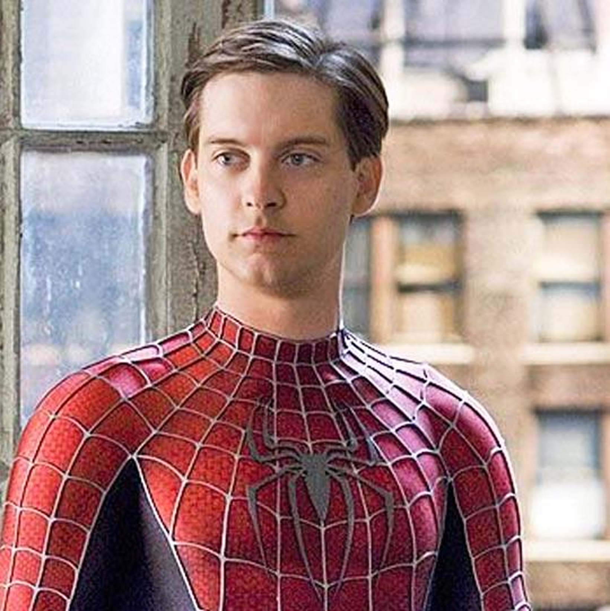
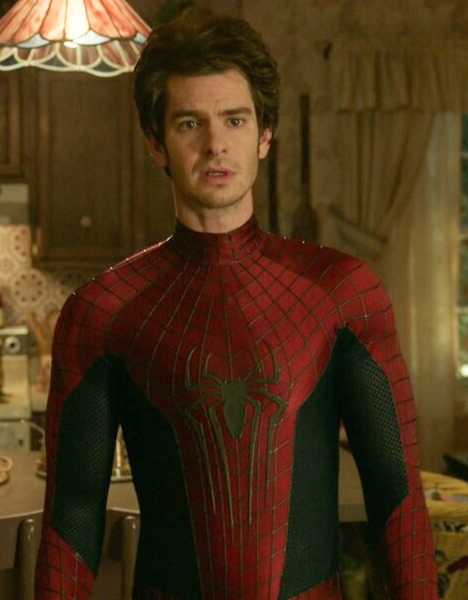
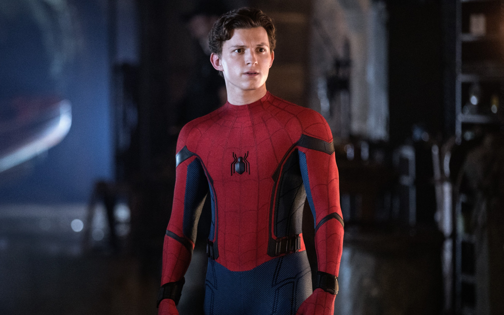

История актёров:

Тоби Магуайр — американский актёр, известный по роли Питера Паркера в трилогии «Человек-паук» Сэма Рэйми. Первый фильм вышел в 2002 году. Его герой получает сверхспособности после укуса паука и учится использовать их, чтобы помогать людям. Образ Человека-паука в исполнении Магуайра стал популярным и запомнился многим зрителям.Также он снимался в фтльмах:«Великий Гэтсби», «Плезантвиль», «Правила виноделов» и д.р.

Эндрю Гарфилд исполнил роль Питера Паркера в дилогии «Новый Человек-паук» (2012–2014), представив героя более эмоциональным, остроумным и уязвимым. Несмотря на то, что его сольная франшиза была досрочно закрыта студией Sony из-за скромных сборов и критических отзывов ко второй части, актер совершил триумфальное возвращение в фильме «Человек-паук: Нет пути домой» (2021). Это появление позволило его персонажу получить долгожданное сюжетное искупление за гибель Гвен Стейси и завоевало огромную любовь критиков и фанатов супергероики.

Том Холланд сыграл Человека-паука в Кинематографической вселенной Marvel, дебютировав в 2016 году и исполнив главную роль в сольной трилогии («Возвращение домой», «Вдали от дома», «Нет пути домой»), а также в дилогии «Мстители». Его Питер Паркер стал самым юным и кассово успешным воплощением героя, чья история тесно связана с наставничеством Тони Старка. Благодаря акробатическим навыкам актера и его обаянию, этот образ завоевал мировую популярность, а возвращение Холланда запланировано в грядущем «Человеке-пауке 4».